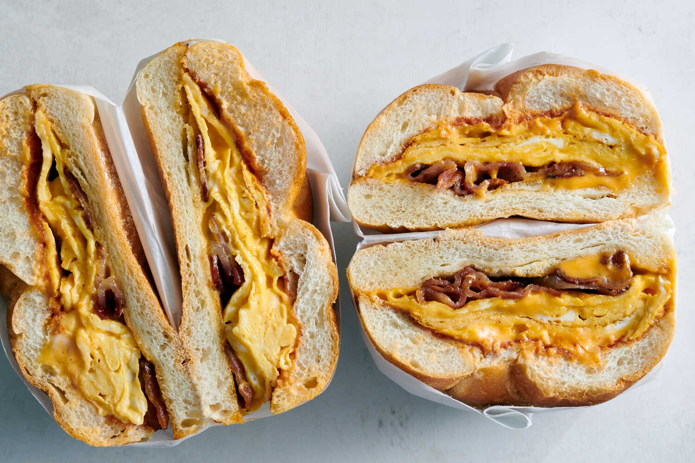

TURKEY BACON,EGG & CHEESE

Ingredients
- Turkey Bacon
- 2 Whole Eggs
- Cheddar Cheese
Preparation
- Heat up a pan over medium heat, once hot use cooking spray and add turkey bacon.
- Cook bacon for around 5 mins then flip and repeat until browned & crispy.
- Put bacon on paper towels then add 2 eggs to the pan and cook until somewhat solid.
- Once slightly solid add your cheese on top of it and allow it to melt at the same time your eggs are cooking.
- Here you have 2 options,
OPTION 1) Either toast bread in a toaster or OPTION 2) toast your bread in that pan we been using. For this recipe we'll assume its the latter.
- Throw a slice of bread in the pan and move your eggs & cheese onto the slice.
- Then add the bacon as well as any sauces you want and finish with the other slice.
- Squish the sandwich and flip until bread is properly toasted.
- Cut your sandwich anyway you like and enjoy!